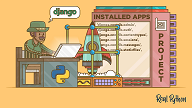

How To Implement Django to your Project
Creating the Virtual Environment First, let’s create a new virtual environment for this project. (If you haven’t already, deactivate the previous virtualenv by typing deactivate in the terminal). For more info on virtual environments and how to use them, visit this page. Navigate to the directory where you want the Django project and type the following into the terminal: mkvirtualenv taskplanner --python=/usr/bin/python3 You may have to change your Python path if it looks different than the one above. The command line shell should now look like below, indicating you are in a virtual environment.... (taskplanner)munsterberg@Lenovo ~/workspace] $
4 Ways to Connect Multiple Business Locations with Technology
Opening a new business location is exciting. It’s a measure of your organization’s success, allows you to expand your reach, and brings even more great people onto your team. But sometimes having multiple business locations can make you feel like you’re running multiple businesses—not one. Luckily, technology is evolving to support growing businesses. It’s no longer necessary to incur large capital expenses, installing legacy infrastructure in each location. Here are four ways that today's technology makes it easier than ever to streamline your operations across multiple business locations.